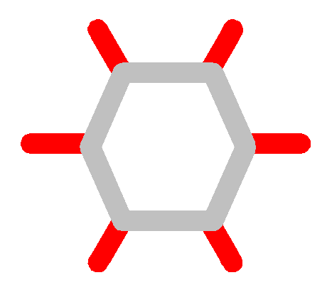

Polygon_offset_2 Demo
Usage:
To run batch statistics on a specific file
Polygon_offset_2
FileName Radius [EpsilonRatio] 1>
test.out 2> test.log
To run GUI demo
Polygon_offset_2 1> test.out 2> test.log
Batch functionality:
Running in a batch mode the application compares various statistics for
Exact and Approximate Offset creation for the polygon in the input
FileName versus new Approximate Offset via Minkowski Sum with given
epsilon ratio, or, if not specified, with ratio ranging from 10^-1 to
10^-4 (see Polygon_offset_2.cpp). The statistics are printed to
FileName_time.
For example to test Ron's benchmark one can run test.bat with next
contents:
Polygon_offset_2 wheel.dat 5000000 1> wheel.out 2> wheel.log
Polygon_offset_2 spiked.dat 5 1> spiked.out 2> spiked.log
Polygon_offset_2 comb.dat 25 1> comb.out 2> comb.log
Polygon_offset_2 chain.dat 2000000 1> chain.out 2> chain.log
Polygon_offset_2 random.dat 15 1> random.out 2> random.log
The output will be in wheel.dat_time, spiked.dat_time, etc...
Note: logging has a
significant impact on the time in this case, #define SHOULD_LOG and
#define SHOULD_OUT in output_debug.h should be commented out
to make the results meaningful.
GUI functionality:
In GUI mode all construction (forward) operations are performed on the
input polygon. Reconstruction (backword) operations in the forward mode
operate on Minkowski Sum, in the backward mode - on the input polygon.
All operations are carried out in a "lasy" mode, that is when input
polygon or parameters are updated only necessary (visible) data is
recalculated. Show/Hide of a specific construction does not cause
recomputation if no input parameter was changed.
 : currently the only method for getting
the input polygon is opening a *.dat file in
the demo (currently polygon without holes is expected).
: currently the only method for getting
the input polygon is opening a *.dat file in
the demo (currently polygon without holes is expected).
TODO: The polygon editing functionality is not working yet, hope to
remedy
this in the near future.
: show input polygon.
Edit Parameters:
Radius - the size of the offset AKA kgon circle radius.
Kgon type - Regular (kgon points are more or less evenly spaced on a
circle), Random (random points picked on a circle according to Kgon
Size, epsilon is not guaranteed), Dependent (selected points depend on
the input polygon and epsilon).
Kgon Size/Epsilon - these parameters are dependent on each other, and
whenever one of them changes the other is updated accordingly (with
epsilon having a priority over size).
TODO: Change Epsilon to a more meaningful Epsilon Ratio. Add current
parameters visualization to status line.
/ : switching between
forward and backward functionality.
Has impact on the availability of
other functions (forward constructions are disabled in the backward
(reconstruction) mode).
Alternates the input polygon of the backward (reconstruction) functions
according to current mode (Minkowski Sum in forward mode, Polygon in
backward mode).
Forward functionality:
: construct kgon (by selection of
rational points on circle) according to parameters.
: construct input polygon and kgon
Minkowski Sum.
 : reconstruct offset arcs from
kgon slopes in the Kgon Sum.
: reconstruct offset arcs from
kgon slopes in the Kgon Sum.
: construct exact offset.
: construct approximate offset
(with Radius - Epsilon) by Ron's method.
: construct approximate offset with
circular arcs from Kgon Sum (by detecting self-intersections of
reconsructed arcs). IN PROGRESS.
: construct inner skeleton of the
polygon.
: construct outer skeleton of the
polygon.
Backward functionality:
: construct outer core (P-tilda), for
the convex input P-tilda = Inset(r-eps).
If inset has several contours only the first one is currently displayed.
: construct inner core (Inset(r+eps)).
If inset has several contours only the first one is currently displayed.
: check approximability - is
input polygon close to an offset of some polygon? Runs approximability
verification
algorithm (for convex case) with Radius and Epsilon parameters.
Computes Inset(r-eps) if it is not computed yet and displays a mapping
between the input and the inset vertices (all blue if approximable, one
yellow if not for the vertex with no appropriate mapping). The result
(approximable
or no) is also printed to the standard output.
TODO: add support for non-convex case. Add Optimal Input reconstruction.